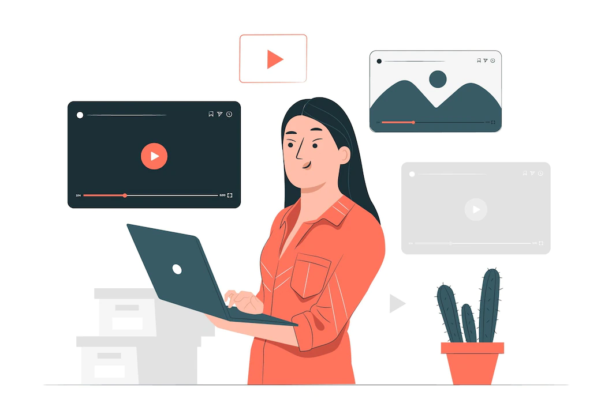
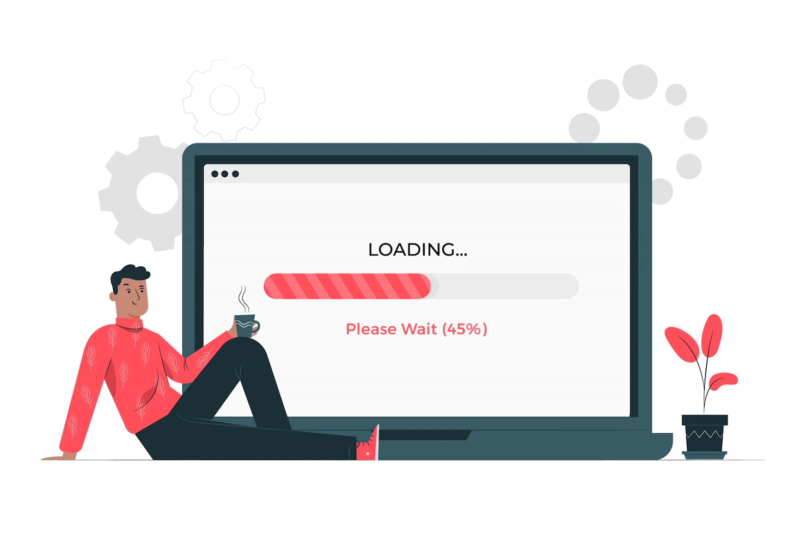
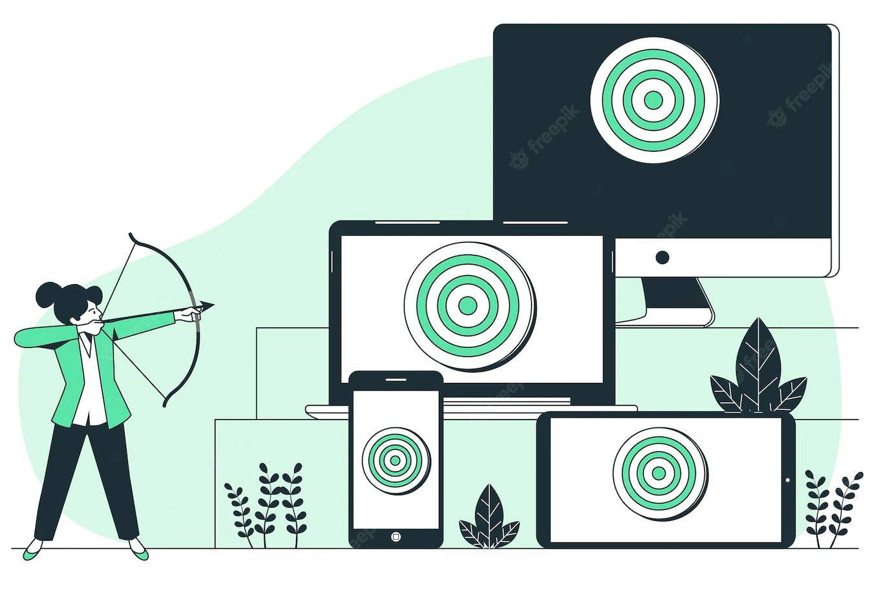
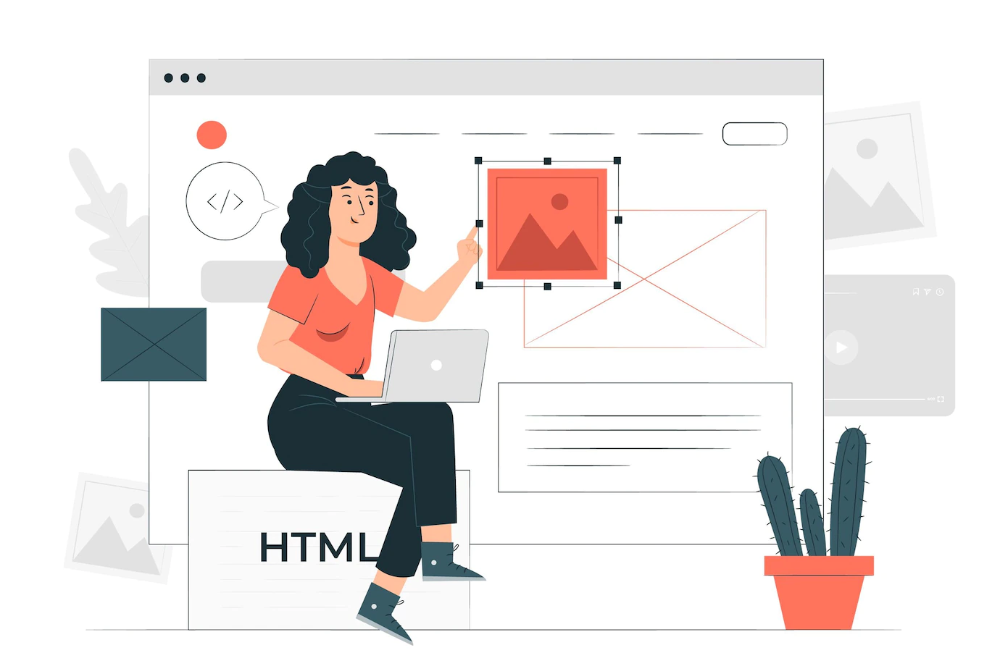
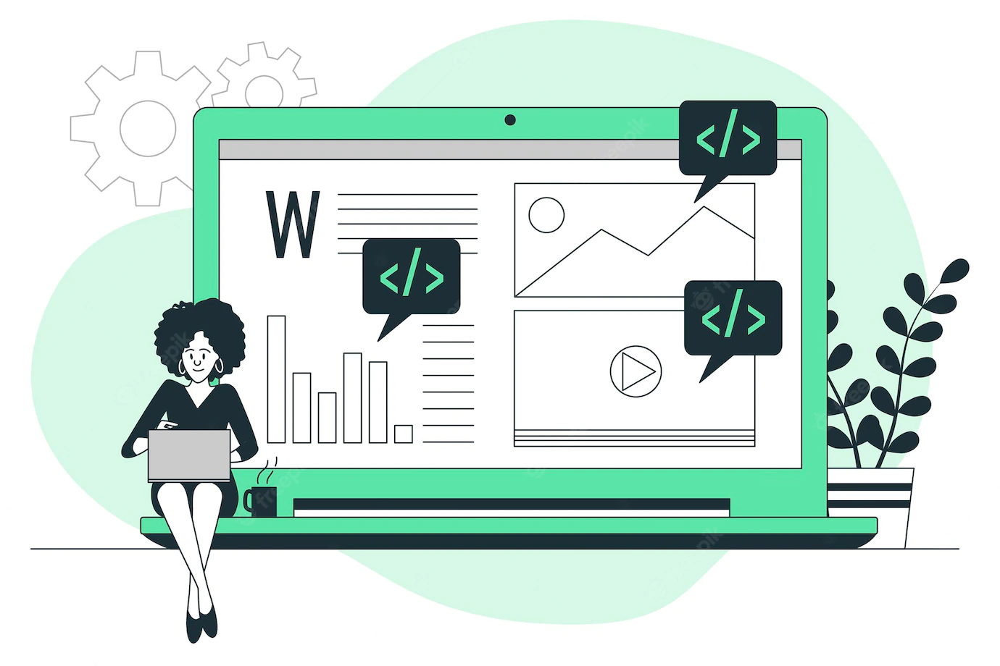

Pozdravljeni,
moje ime je Neža
web dev iz Ljubljane
Šola
Obiskovala sem Srednjo šolo za oblikovanje in fotografijo ter pridobila naziv tehnica oblikovanja - grafično oblikovanje.
Znanja
Za začetek sem se poglobila v HTML in CSS, saj sem prepričana, da dobre osnove omogočajo boljšo nadgradnjo znanja.
Učenje
-
W3 schools, kjer sem predelala HTML material
-
SheCodes Basics, kjer smo obravnavali HTML, CSS in začetniško JavaScript programiranje
freeCodeCamp HTML tutorial
freeCodeCamp HTML course
freeCodeCamp CSS tutorial
spremljanje web dev Youtube kanalov
o meni
-
Z web developmentom sem se srečala že prej, resno odločitev za učenje pa sem sprejela pred dvema mesecema. S prvim napisanim Hello World sem vedela, da sem odkrila svojo strast. Učenje sem začela na spletni strani W3 schools. Želela sem si usmeritve, zato sem se vključila v tečaj SheCodes Basics. Na tem tečaju sem naredila dva projekta, ki si jih lahko ogledate spodaj. Učenje sem nadaljevala s freeCodeCamp videi, s pomočjo katerih se učim in gradim projekte še danes.
-
Zavedam se, da je pred mano še veliko učenja in tega se neizmerno veselim. Spodaj si lahko pogledate moje dosedanje projekte. Vaših komentarjev bom zelo vesela.
moji projekti
Za vajo sem prenovila svojo portfolio spletno stran. Dodala sem grid, odstranila določene elemente in stran poskusila narediti čimbolj primerno za ogled na vseh napravah.
S klikom na sliko lahko odprete moj prvi projekt pri tečaju SheCodes Basics. Videz spletne strani je poustvarjen po navodilih, na gumbu pa je aplicirana osnovna JavaScript. Z uporabo DevTools inspect sem spletno stran uspela poustvariti.
Spletna stran, ki se skriva pod sliko, je moj končni projekt pri SheCodes Basics. Pri ustvarjanju spletne strani sem imela proste roke. Dodati sem morala elemente in stile, ki so jih zahtevali da sem uspešno opravila tečaj. Tema spletne strani je Berlin. Na strani so povezave do drugih spletnih strani, nekaj stilnih elementov in osnovna JavaScript.
Ta projekt je freeCodeCamp projekt, pri katerem sem morala poustvariti spletno stran inštruktorja. Poudarek je bil na HTMLju in ustvarjanju čim več različnih elementov. Spletna stran obsega osnovno stran in dve podstrani.
Tudi ta projekt je iz strani freeCodeCamp, pri katerem sem spletno stran delala skupaj z inštruktorjem. Poudarek je bil na raznovrstnosti HTML elementov.